Tips and Tricks
Change settings with a single mouse click: Press and hold the right mouse button until the context menu is shown, then release while over the selection:
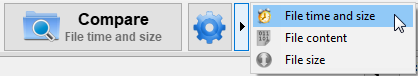
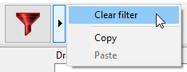
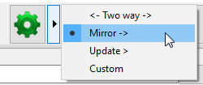
Select multiple configurations at a time:
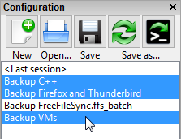
Select a few items via mouse, and refine the selection by holding the Control key while clicking.
Start comparison directly by double-clicking on a configuration:
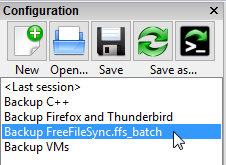
Synchronize multiple folder pairs at a time with different configurations:
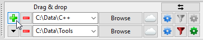
Start synchronization directly without clicking on compare first:
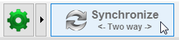
Move a window by clicking on a free area and holding the mouse button:
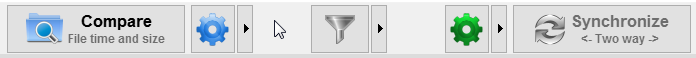
Open a batch configuration for edit via the Windows Explorer context menu:

Drag and drop two folders at a time from Windows Explorer to fill a folder pair in one go:
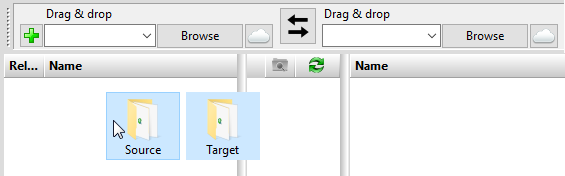
Copy files selected on the main dialog to an alternate folder and thereby save a "diff":
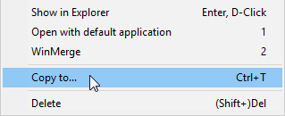
Use a volume name instead of a drive letter:

Show thumbnail icons via the column header context menu:
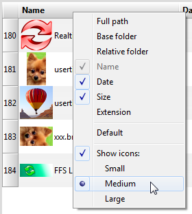
Save the current view filter selection as default:

Remove local settings from individual folder pairs:
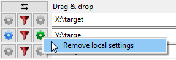
Remove obsolete paths from the folder drop-down list by pressing the Delete key:
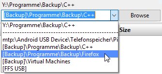
Select a time span for files to include via the date column context menu:
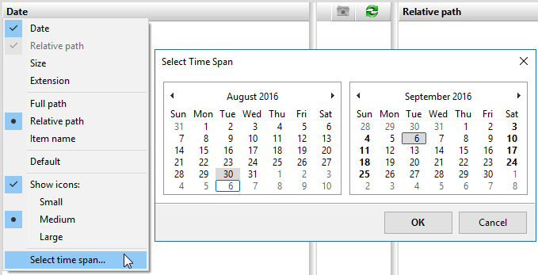
Double-click on comparison and synchronization variants to confirm the dialog:
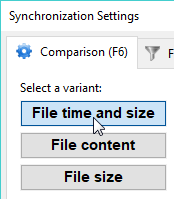
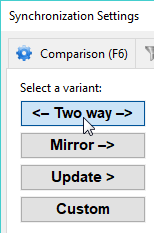